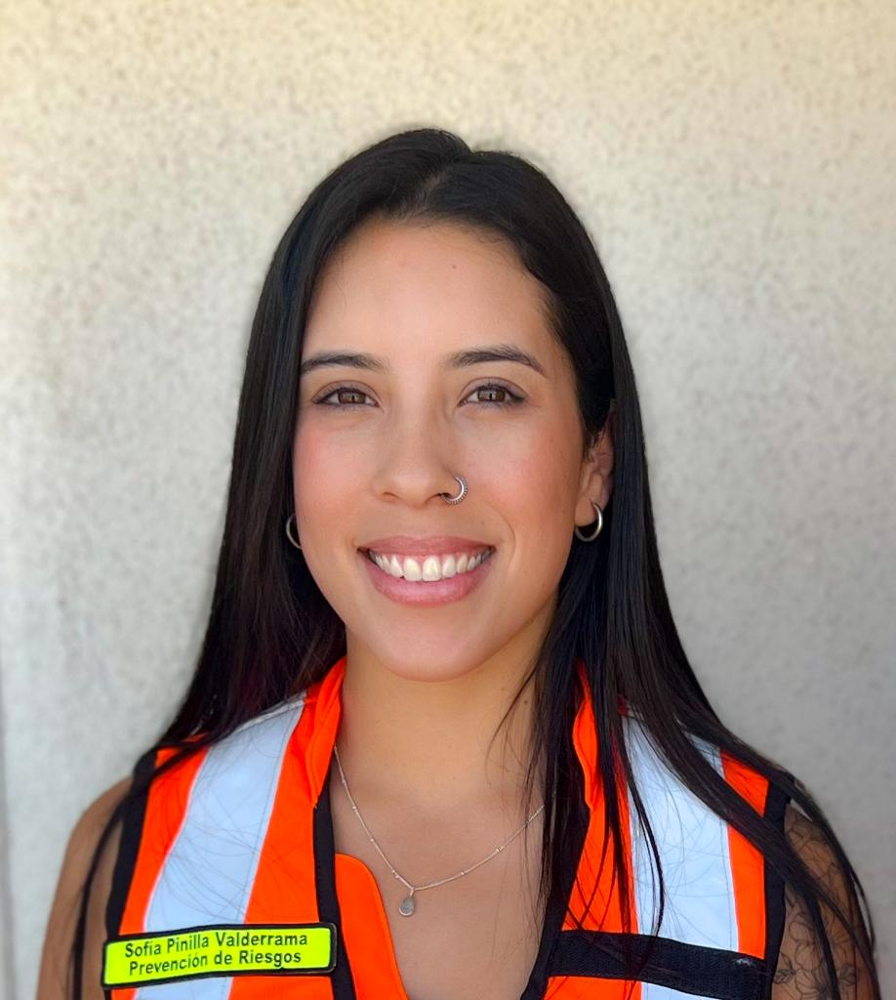

Sofía Paula Pinilla Valderrama
Experto en Prevención de Riesgos Laborales y Ambientales

SOBRE MÍ
Profesional titulada de Técnico en Prevención de Riesgos Laborales, con 6 años de experiencia laboral.
Cursando último año de Ingeniería en Ingeniería en Prevención de Riesgos Laborales y Ambientales, ambas
carreras impartidas por la Universidad Técnico Federico Santa María.
Experta formada con sólidos conocimientos en prevención de riesgos e higiene ocupacional capaz de diseñar,
mantener e implementar Sistemas Integrados de Gestión en cualquier tipo de organización y área productiva.
COMPETENCIAS
- Respuesta rápida al cambio
- Liderazgo
- Pensamiento analítico
- Trabajo en equipo
- Comunicación efectiva
- Toma de desiciones
- Iniciatica y proactividad
- Tolerancia al trabajo bajo presión
OBJETIVO PROFESIONAL
Busco formar parte de una organización que me permita contribuir en la gestión de sus procesos y
estándares de prevención de riesgos, al mismo tiempo que potencio mis aptitudes de liderazgo,
resolución de conflictos y trabajo en equipo.
EXPERIENCIA LABORAL
Constructora KMC Limitada
Encargada Oficina Central de Prevención de Riesgos
Abril 2020 - Febrero 2023
- Coordinación general a cargo de equipo de prevencionistas de riesgos
- Creación y actualización de la totalidad de archivos y formatos requeridos
para la gestión documental legal, relativa a la prevención de riesgos
laborales.
- Elaboración, seguimiento y evaluación del Sistema de Gestión SSO.
- Seguimiento permanente y aplicación de auditorías internas al desempeño
profesional del equipo de prevención de riesgos.
- Análisis y control estadístico de la empresa. Propuesta de programa de
actividades para optar a la rebaja de la taza de cotización adicional.
- Gestión de adquisición y control de activos.
- Aplicación de Protocolos Minsal, Salud Ocupacional.
- Representación ante Organismo Administrador y Organismos fiscalizadores.
Constructora Pacal SpA
Encargada Prevención de Riesgos
Diciembre 2016 - Marzo 2020
- Práctica profesional, proyecto edificación de casas dos pisos. Obra Las
Acacias, Peñablanca.
- Asistente de Prevención de Riesgos, proyecto edificación en altura. Obra
Altos de Marga Marga, Quilpué.
- Asistente de Prevención de Riesgos y posterior Encargada de Prevención
de Riesgos. Obra Cumbres del Valle, La Cruz
- Encargada de Prevención de Riesgos. Edificación en altura. Obra Vista
San Francisco I y II, Limache.
FORMACIÓN ACADÉMICA
Técnico Universitario en Prevención de Riesgos, UTFSM
20164-2016
Ingeniería en Prevención de Riesgos Laborales y Ambientales,
Licenciado (a), UTFSM
20164-2016
Perfil Linkedin
Sofía Pinilla Valderrama